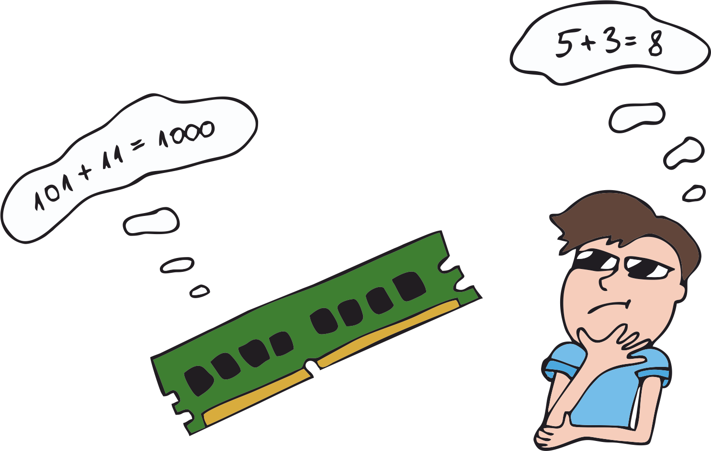

Sa oled kindlasti arvutit näinud ja kasutanud. Ilmselt kasutad arvutit ka praegu selle õpiku lugemiseks.
Aga kas sa tead, mis see arvuti täpsemalt on?
Tihtipeale kujutatakse arvutile mõeldes ette sülearvutit või lauaarvutit, millel on monitor, klaviatuur ja hiir.
Samuti võivad pähe tulla tahvelarvuti, nutitelefon ja nutikell. Aga tegelikult kuuluvad laiemas mõttes arvutite alla ka näiteks
temperatuuri reguleeriv veekeedukann, telekas ja palju muud. Arvutite alla võime lugeda kõik seadmed, mis teevad etteantud käskluste põhjal mingeid tehteid ja arvutusi.
Arvuti silmaga nähtavat ja käega katsutavat osa kutsutakse riistvaraks. Siia alla kuuluvad arvuti sees olevad komponendid, aga ka näiteks hiir, klaviatuur ja kuvar.
Järgnevalt tutvume tüüpilise personaalarvuti tähtsamate komponentidega.
Protsessor - see on arvuti "aju", mis vastutab käskude täitmise eest ja mis kontrollib kõike arvutis toimuvat. Protsessoril
on oma kindel hulk käske, millest ta aru saab ja mida ta täita suudab.
Muutmälu - arvutil, nagu ka meil, on vaja teatud asju meeles hoida samal ajal kui ta tööd teeb ja selleks kasutab arvuti muutmälu
ehk RAM-i (või lihtsamalt öeldes mälu).
Inimese mõistes oleks see nagu peastarvutamisel vahetulemuste meeles pidamine enne kui lõpliku vastuseni jõuame või raamatut lugedes sõnade meeles pidamine,
kuni need moodustavad lause ja saame lause mõttest aru.

Andmekandja - andmekandja on andmete pikemaajaliseks salvestamiseks. Mälu on arvutitel tüüpiliselt üsna piiratud, kuna see on kallis,
ning kõiki faile ja andmeid ei õnnestu korraga mälus hoida. Seepärast salvestatakse andmed, mida hetkel ei kasutata, andmekandjale. Andmekandja on küll aeglasem, aga odavam ja
siit saab andmeid vajadusel jälle mälusse lugeda. Inimestega on kohati samamoodi – meil on palju mälestusi ja kui tahame, võime mõnele konkreetsele mälestusele mõelda, aga me ei suuda
korraga kõikidele oma mälestustele mõelda.
Arvuti mälust ja andmekandjast võib mõelda ka kui töölauast ja raamaturiiulist. Kui teeme tööd või loeme mõnda raamatut, siis hoiame neid asju
laual (ehk arvuti mõttes mälus). Kõik teised raamatud ja asjad, mida me hetkel ei kasuta, on pandud ära riiulisse (ehk andmekandjale).
Emaplaat - emaplaat ühendab kõik arvuti komponendid üheks tervikuks. Selle külge on ühendatud nii protsessor, mälu, andmekandjad
kui ka kõik teised arvuti tööks olulised asjad. Läbi emaplaadi toimub ka suhtlus erinevate komponentide vahel.
Graafikakaart - graafikakaart vastutab pildi kuvamise eest. Siin tehakse arvutusi ja toiminguid, mis on vajalikud
monitoril pildi kuvamiseks.
Kuidas arvuti töötab?
Nüüd tekib kindlasti küsimus, et aga kuidas ikkagi arvuti oskab nii palju erinevaid asju teha ja kuidas ta teab, mida tegema peab? Siin tulevadki nüüd mängu programmeerimine ja programmid.
Programm on käskude jada, millest arvuti oskab aru saada ja neid täita. Programmeerimine
on programmide kirjutamine. Paraku aga ei saa me arvutile lihtsalt inimkeeles öelda: "Võta arvud 2 ja 1 ning liida need kokku". Arvuti jaoks on arusaadav kahendkood, mis
koosneb ainult arvudest 1 ja 0. Arvuti kõhus toimib kõik tänu elektrile ning 1 ja 0 tähistavad seal pingeid. Kõiki arve, tähti ja sümboleid
on võimalik teisendada kahendkoodi. Näiteks sõnale "Tere" vastab kahendkoodis 01010100 01100101 01110010 01100101.
See aga ei tähenda, et lihtsalt inimkeele teisendamisel kahendkoodi saame töötava programmi. Protsessoril on piiratud kogus käske, millest ta aru saab,
ja nendel käskudel on kindel struktuur. Kasutades kahendkoodis protsessorile arusaadavaid käske, suudab arvuti igasuguseid asju teha, paraku on aga kahendkoodis inimestel
väga keeruline kirjutada.
Praegu pole veel välja mõeldud lihtsat viisi, kuidas muuta tavaline kõnekeelne tekst arvuti jaoks arusaadavateks käskudeks. Küll aga on loodud spetsiaalsed
keeled, mida kutsutakse programmeerimiskeelteks. Nendes keeltes on inimestel lihtne porgramme kirjutada ja arvuti oskab neid keeli kahendkoodiks teisendada.
Milliseid programmeerimiskeeli on olemas?
Esimeste arvutitega tekkisid esimesed programmeerimiskeeled ning alguses kirjutati programme konkreetsetele arvutitele neile arusaadavas kahendkoodis.
Ajaga on aga programmeerimiskeeled edasi arenenud ning muutunud järjest üldisemaks ja rohkem inimkeelte sarnaseks. Võib-olla ühel päeval suudab arvuti ka
inimkeeles antud käske täita.
Programmeerimiskeeli jagatakse madala ja kõrge taseme keelteks. Neid keeli, mis on sarnased arvutile arusaadavale kahendkoodile, nimetatakse madala taseme keelteks ja
neid keeli, mis sarnanevad rohkem inimeste keeltele, nimetatakse kõrge taseme keelteks. Võtame siinkohal ühe lihtsa eesmärgi, väljastada ekraanile lause: "Tere!" ning vaatame, kuidas
seda erinevates programmeerimiskeeltes teha.
Masinkeel - see on kõige vanem ja kõige madalama tasemega keel ning see koosneb ainult kahendarvudest. Siin näites on
kahendarvud kujutatud hoopis kuueteiskümnendsüsteemis, et ruumi kokku hoida. Arvuti saab sellest keelest kohe aru, ilma seda teisendamata. Paraku aga on see keel inimeste jaoks väga raskesti loetav.
Masinkeel on ka riistvara spetsiifiline, mis tähendab, et ühe protsessori jaoks kirjutatud programm ei pruugi olla teise protsessori jaoks arusaadav. Selles näites
tähistab iga rea esimene arv mäluaadressit, mitte pole programmi osa.
{{ machineCodeText }}
Assembler - assembler on masinkeelest samm kõrgemal. See on oma olemuselt väga sarnane masinkoodile, lihtsalt arvud on
asendatud lühikeste sõnaliste käskudega. Inimesele on assembler siiski üsna raskesti loetav, seepärast suurem osa programmeerijaid tänapäeval assembleris koodi ei kirjuta.
Sarnaselt masinkoodile sobib assembleris kirjutatud kood vaid konkreetsele riistvarale ning sama koodi pole võimalik
kõikides arvutites käivitada.
{{ assemblyText }}
C - see keel on inimese jaoks juba üsna hästi loetav ja kirjutatav.
C keelt loetakse juba kõrge tasemega keeleks ning C-s kirjutatud kood ei ole enam seotud konkreetse riistvaraga, mis teeb selles keeles
kirjutatud programmid üldisemaks ja laialdasemalt kasutatavaks. C on lihtsasti teisendatav assembleriks ja masinkoodiks, seetõttu on C väga kiire ning C-s
on väga hea kirjutada koodi erineva riistvaraga suhtlemiseks. Ka näiteks operatsioonisüsteemid on tüüpiliselt C-s kirjutatud.
{{ cText }}
C++ - see on C üks järeltulijaid. Võrreldes C keelega on C++ paindlikum ja rohkemate võimalustega. C++ säilitab C kiiruse ning
on ka tagasiühilduv C keelega, mis tähendab, et seal saab kasutada ka C-s kirjutatud koodi. Paljud tänapäevased arvutimängude mootorid on just selles keeles kirjutatud.
C++ kuulub objektorienteeritud porgrammeerimiskeelte alla (objektorienteeritud programmeerimise teemasse me selle kursuse raames põhjalikult ei süvene, aga lihtsustatult
tähendab see, et programmis kasutatakse erinevaid objekte, millel on kindlad omadused. Näiteks meil võib olla objektiks koer, kellel on kindel karvavärv, tõug, nimi ja vanus ning kes
oskab öelda "Auh" ja saba liputada).
{{ cPlusPlusText }}
Java - jällegi üks väga levinud keel, kuid mitte võib-olla kõige lihtsam esimene programmeerimiskeel. Võrreldes mõne järgmise
keelega, on siin vaja üsna palju koodi kirjutada lihtsa ülesande jaoks. Java on samuti objektorienteeritud programmeerimiskeel.
{{ javaText }}
JavaScript - seda keelt kasutatakse laialdaselt veebirakendustes. JavaScripti süntaks on võrreldes eelmiste keeltega juba palju
lihtsam ja ekraanile "Tere!" väljastamiseks piisab vaid ühest reast. Hoolimata sellest, et JavaScripti ja Java nimed on sarnased, pole nendel keeltel tegelikult
otsest seost.
{{ javaScriptText }}
Python - see on üks lihtsamaid ja algajasõbralikumaid keeli. Seepärast kasutame ka siin kursusel just Pythonit. Selles keeles
õpitavad programmeerimise põhitõed on aga hiljem ka lihtsasti rakendatavad teistes keeltes nagu JavaScript, Java ja C++.
{{ pythonText }}
Mida on vaja, et programmeerimisega alustada?
Programmeerimisega alustamiseks on vaja kahte komponenti. Esiteks on meil vaja tekstiredaktorit, milles koodi kirjutada (selleks sobiks ka tavaline Notepadi rakendus,
mis paljudes Windows operatsioonisüsteemiga arvutites juba olemas on). Teiseks on meil vaja kuidagi teisendada meie kirjutatud kood masinkoodiks ning selleks on
vastavalt kasutatavale programmeerimiskeelele kaks varianti: kompilaator või interpretaator.
Kompilaator on arvutiprogramm, mis suudab tõlkida programmi ühest keelest teise. Seda kasutavad näiteks C, C++ ja Java. Kompilaator
võtab kirjutatud koodi ning tekitab selle põhjal faili, mida saab arvutis käivitada (nagu näiteks .exe-faililaiendiga failid).
Interpretaator ei tõlgi kogu koodi masinkoodiks enne programmi käivitamist, vaid teeb seda jooksvalt programmi töö ajal. Interpretaatorit kasutab näiteks Python.
Seega kui soovime alustada programmeerimist keeles Python, siis on meil vaja Pythoni interpretaatorit. Pythoni saame soovi korral alla laadida lehelt
https://www.python.org/downloads/.
Tüüpiliselt aga kasutatakse programmeerimiseks mõnda spetsiaalselt tarkvararakendust, täpsemalt integreeritud programmeerimiskeskkonda (IDE-t).
Need lihtsustavad meie jaoks programmi kirjutamise ja käivitamise protsessi.
Thonny - see on spetsiaalselt algajatele mõeldud Pythoni programmeerimise rakendus. See tasuta rakendus on loodud siinsamas Eestis ning selle saab endale
ka eestikeelsena paigaldada. Thonny on leitav lingilt https://thonny.org/. Selle kursuse jaoks sobib Thonny väga hästi, seega
soovitame selle endale alla laadida ja paigaldada enne järgmiste peatükkide juurde minemist. Thonnyga tuleb juba ka Pythoni interpretaator kaasa, seega me ei pea ise midagi
enam lisaks paigaldama hakkama.
Visual Studio Code - see on üks väga populaarne IDE ning tema eelis on just see, et ta toetab paljusid programmeerimiskeeli. See tähendab,
et programmeerijad, kes kasutavad mitut erinevat keelt, saavad erinevates programmeerimiskeeltes kirjutatud projektide jaoks kasutada ühte keskkonda. Tema teine suur eelis
on see, et kogu pakutav funktsionaalsus on tasuta. Selle rakenduse saab soovi korral alla laadida lingilt
https://code.visualstudio.com/. Siin aga ei tule Pythoni interpretaator kohe automaatselt kaasa, küll aga oskab
Visual Studio Code meile sobivat interpretaatorit soovitada kui märkab, et tahame Pythonis koodi kirjutada ja käivitada.
PyCharm - see on kindlasti natuke keerulisem keskkond kui Thonny või isegi Visual Studio Code, kuid see eest on tal palju erinevaid
võimalusi. Kui selle tarkvara kasutamine ära õppida, siis on sellega väga mugav koodi kirjutada, sest PyCharm oskab tihti meie eest lauseid lõpetada ning mõned koodijupid ka
ise valmis genereerida. Sellel tarkvaral on olemas nii tasuta (Community) kui ka tasuline (Professional) variant ning kuigi tasulisel versioonil on funktsionaalsust rohkem, piisab
algajale programmeerijale ka tasuta versioonist. PyCharmi leiab lingilt
https://www.jetbrains.com/pycharm/download/#section=windows.